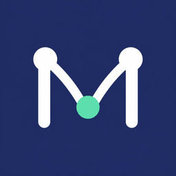

See the skills, connections and strategy your company already has.
Maieutics is the Socratic art of drawing out what someone already knows. Maieutica does it for an organisation: one map of goals, projects, people and skills.
The problem
Past a few hundred people, nobody can hold the map of skills in their head. Work goes to whoever is visible.
Staffing by memory
A single resignation can stall two projects. You find out when it happens.
Key-person risk
Teams are busy. Which projects serve which goals, and what they cost, is anyone's guess.
Effort without a home
The replacement job description is last year's, not what the person actually did.
Backfilling the past
What Maieutica is
Strategy sits on top, skills at the bottom. Projects and people are the bridge. Each link carries a level, a source and a date.
How it works
Sources
No email or chat scraping
Onboarding chat
Evidence and confidence kept
Graph
Postgres, standard SQL
Analyses
Deterministic and auditable
Interfaces
Claude today, local model later
The AI never edits the graph on its own and never answers from memory: it calls the same analyses you see on screen, then explains the result.
Capability · Onboarding chat
single points of failure after one new colleague confirms their CV in the demo.
Capability · The four layers
Synthetic demo company: 36 people, 12 projects, 27 skills.
Capability · Networks
Betweenness, effective size and constraint per node, on every layer and on the combined graph.
Capability · Gaps & alignment
skills each held up by one expert: Kubernetes, Cybersecurity, GDPR. The trust goal is the most exposed.
Capability · Portfolio economics
of FTE sits on under-optimised or unvalued work in the demo (5.5 of 22.3 FTE).
Illustrative values and blended cost bands, not individual salaries.
Capability · Use-case advisor
return on a zero-downtime platform: two people from inside plus one hire.
Value assumptions are placeholders: replace with your finance team's numbers.
Capability · Jira and Kanban
Marta's planned against observed time on Cloud Migration, from the demo board.
Demo runs on a fixture in Jira's REST format. Maieutica reads; it creates tickets only when you press Create.
Capability · Succession
Restricted view: who is critical is sensitive, so access is role-based.
Example use cases · figures from the synthetic demo company
Advisor · Staffing a new initiative
Can we build a zero-downtime platform?
Maieutica finds Kubernetes expert level exists in one person, already at 85%.
Two people from inside, one hire, 2.7× return. No one is overloaded.
Succession · A resignation
Our lead DevOps engineer is leaving.
Maieutica shows she is the last Kubernetes expert; the best internal match has no free time.
A role profile from her real work, and a backfill plan before the notice period starts.
Economics · Portfolio review
Where does our capacity actually go?
Maieutica shows a quarter of project FTE on work that returns little or has no goal.
Re-deploy 5.5 FTE toward work that pays back, before budget season.
Networks · Reorg or integration
Who holds the company together?
Maieutica shows the brokers, four unit pairs that never share a project, and projects competing for the same people.
Design the reorg or merger around the real network, not the org chart.
Trust and governance
The model proposes. Nothing enters the graph until the person agrees. They can edit or delete their profile.
Each skill keeps its source, the supporting sentence, a confidence and a date. Skills age.
No email, chat or keystroke mining. No performance scoring. Explicit sources only.
Every recommendation shows the links behind it. Numbers come from queries, prose from the model.
"Who is critical or replaceable" is sensitive. Succession and cost views are restricted.
Cost uses blended bands per seniority. Individual pay is never stored or needed.
Designed for GDPR and for the EU AI Act's requirements on employment-related systems: human oversight, logging, transparency. Confirm the classification with your counsel.
Architecture and integration
Interfaces
Dashboard, onboarding chat and use-case advisor. Teams and Slack connectors on the roadmap.
Model
Claude today. A local model later, behind one provider interface. It calls the analyses as tools and writes the prose.
Analyses
SQL views and graph metrics: gaps, betweenness, structural holes, economics, team building.
Graph
Postgres. Four link tables with dates, sources and confidence. Multi-tenant. Standard interchange files.
Ingestion
HRIS, Jira boards, Kanban CSV exports and CVs. Every importer produces the same table files.
Proposed pilot
Weeks 1–2
Weeks 3–6
Weeks 7–12
How we will know it worked
Give us an HRIS export and a project list. In two weeks you will see your own four layers.